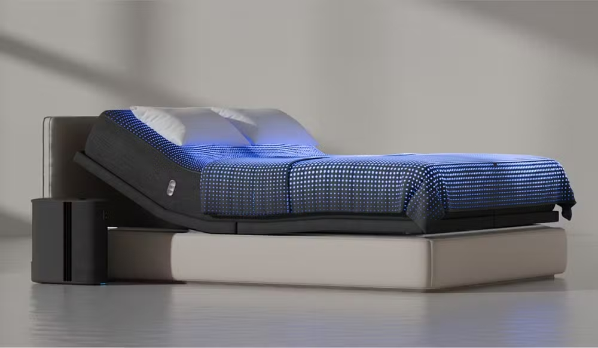

Pane na Amazon 'enlouqueceu' camas inteligentes na madrugada
Por Redação g1
Falha na Amazon Web Services (AWS) deixou usuários sem controle das camas inteligentes, que ligaram e desligaram sozinhas.
Falha na Amazon Web Services (AWS) deixou usuários sem controle das camas inteligentes, que ligaram e desligaram sozinhas.
O Vocational Test é uma plataforma que usa inteligência artificial para ajudar jovens a descobrirem sua verdadeira vocação. Por meio de perguntas personalizadas, a ferramenta identifica habilidades, interesses e valores, entregando uma visão clara dos caminhos profissionais mais compatíveis.

App de notícias será descontinuado pouco menos de um ano após seu lançamento

O Instituto Metrópole Digital, da Universidade Federal do Rio Grande do Norte (IMD/UFRN), lançou hoje, dia 15, um edital com oferta de 720 novas vagas para seus Cursos Técnicos em Tecnologia da Informação.
Com paixão por tecnologia, a estudante Eduarda Guimarães vem conquistando espaço como desenvolvedora full-stack e mostrando seu talento em diversos projetos de programação.
A 3035 Tech confirmou o início da próxima edição do programa Teach3035, iniciativa prática de ensino em programação que prepara novos talentos para os desafios do mercado de tecnologia.
A Microsoft introduziu o ‘Copilot Mode’ em seu navegador Edge, integrando inteligência artificial de maneira nativa para transformar o browser em um assistente pessoal prático e eficiente.